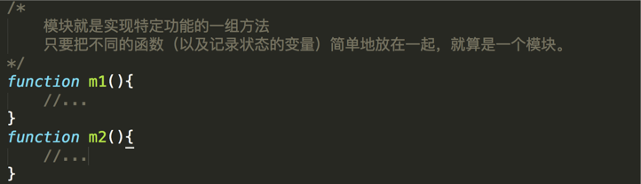
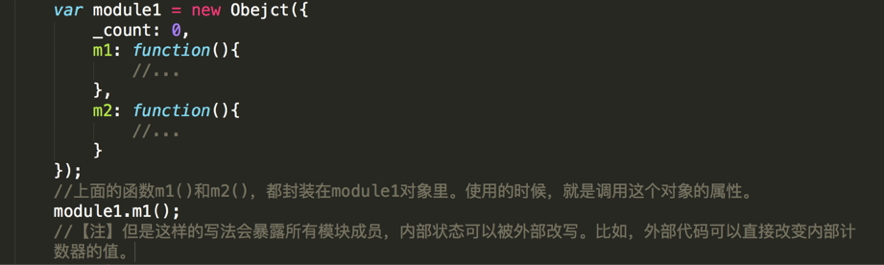
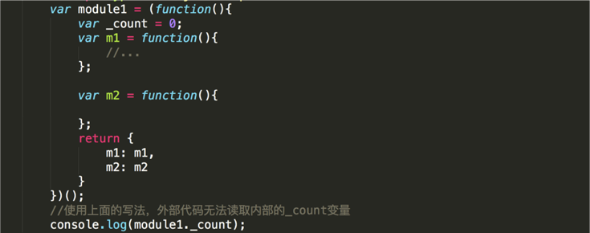
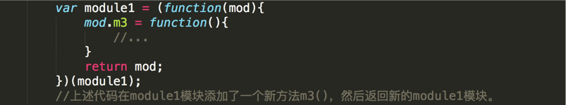
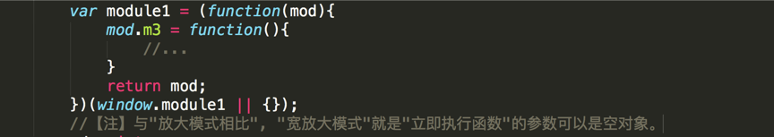

模块就是实现特定功能的一组方法。 只要把不同的函数（以及记录状态的变量）简单地放在一起，就算是一个模块。
上面的函数m1()和m2()，组成一个模块。使用的时候，直接调用就行了。 这种做法的缺点很明显："污染"了全局变量，无法保证不与其他模块发生变量名冲突，而且模块成员之间看不出直接关系。
为了解决上面的缺点，可以把模块写成一个对象，所有的模块成员都放到这个对象里面。
使用立即执行函数（Immediately-Invoked Function Expression，IIFE），可以达到不暴露私有成员的目的
如果一个模块很大，必须分成几个部分，或者一个模块需要继承另一个模块，这时就有必要采用"放大模式"（augmentation）
在浏览器环境中，模块的各个部分通常都是从网上获取的，有时无法知道哪个部分会先加载。如果采用上一节的写法，第一个执行的部分有可能加载一个不存在空对象，这时就要采用"宽放大模式"。
